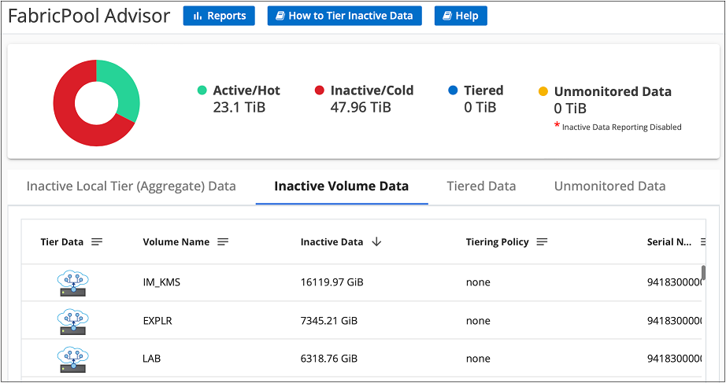
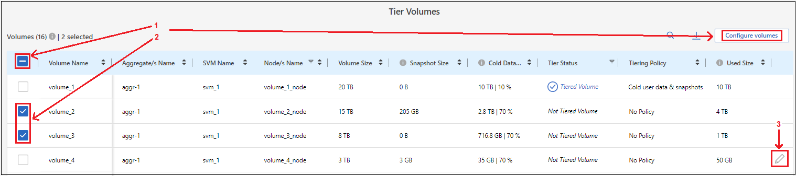
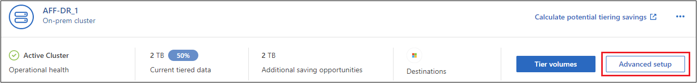

はじめに
はじめに
クラスタのデータ階層化の管理
 変更を提案
変更を提案
オンプレミスの ONTAP クラスタからデータ階層化を設定したので、追加のボリュームからデータを階層化したり、ボリュームの階層化ポリシーを変更したり、クラスタを追加したりできます。
クラスタの階層化情報を確認しています
クラウド階層に格納されているデータの量やディスク上のデータの量を確認することができます。または、クラスタのディスク上のホットデータとコールドデータの量を確認することもできます。BlueXPの階層化サービスは、この情報をクラスタごとに提供します。
-
左側のナビゲーションメニューから、* Mobility > Tiering *を選択します。
-
ページで、メニューアイコンをクリックします
 クラスタの場合は、[クラスタ情報]*を選択します。
クラスタの場合は、[クラスタ情報]*を選択します。 ページで[Cluster Info]ボタンを選択するスクリーンショット。"]
ページで[Cluster Info]ボタンを選択するスクリーンショット。"] -
クラスタに関する詳細を確認します。
次に例を示します。

Cloud Volumes ONTAPシステムでは表示が異なることに注意してください。Cloud Volumes ONTAPボリュームではデータをクラウドに階層化できますが、BlueXP階層化サービスは使用しません。 "アクセス頻度の低いデータをCloud Volumes ONTAPシステムから低コストのオブジェクトストレージに階層化する方法をご紹介します"。
また可能です "クラスタの階層化情報をDigital Advisorから表示します" ネットアップ製品の知識がある方は、左側のナビゲーションペインから*クラウドの推奨事項*を選択してください。

追加のボリュームのデータを階層化する
新しいボリュームの作成後など、追加のボリュームのデータ階層化をいつでも設定できます。

|
オブジェクトストレージはクラスタの階層化の初期設定時にすでに設定されているため、設定する必要はありません。ONTAP は、アクセス頻度の低いデータを他のボリュームから同じオブジェクトストアに階層化します。 |
-
左側のナビゲーションメニューから、* Mobility > Tiering *を選択します。
-
ページで、クラスタの[ボリュームの階層化]*をクリックします。

-
_Tier Volume_page で、階層化を設定するボリュームを選択し、階層化ポリシーページを起動します。
-
すべてのボリュームを選択するには、タイトル行（
 ）をクリックし、 * ボリュームの設定 * をクリックします。
）をクリックし、 * ボリュームの設定 * をクリックします。 -
複数のボリュームを選択するには、各ボリュームのボックス（
 ）をクリックし、 * ボリュームの設定 * をクリックします。
）をクリックし、 * ボリュームの設定 * をクリックします。 -
単一のボリュームを選択するには、行（または）をクリックします
 アイコン）をクリックします。
アイコン）をクリックします。
-
-
_Tiering Policy_Dialog で、階層化ポリシーを選択し、必要に応じて選択したボリュームのクーリング日数を調整して、 * 適用 * をクリックします。

選択したボリュームのデータがクラウドに階層化されます。
ボリュームの階層化ポリシーを変更する
ボリュームの階層化ポリシーを変更すると、 ONTAP がコールドデータをオブジェクトストレージに階層化する方法が変更されます。変更は、ポリシーを変更した時点から始まります。変更されるのはボリュームに対する以降の階層化の動作のみで、データが変更後からクラウド階層に移動されることはありません。
-
左側のナビゲーションメニューから、* Mobility > Tiering *を選択します。
-
ページで、クラスタの[ボリュームの階層化]*をクリックします。
-
ボリュームの行をクリックし、階層化ポリシーを選択します。必要に応じてクーリング日数を調整し、 * 適用 * をクリックします。
-
注 : * 「階層化データを取得する」オプションが表示される場合は、を参照してください クラウド階層から高パフォーマンス階層へのデータの移行 を参照してください。
-
階層化ポリシーが変更され、新しいポリシーに基づいてデータが階層化されます。
アクセス頻度の低いデータをオブジェクトストレージにアップロードするためのネットワーク帯域幅を変更します
クラスタでBlueXPの階層化をアクティブ化すると、デフォルトでは、ONTAPは無制限の帯域幅を使用して、作業環境内のボリュームからオブジェクトストレージにアクセス頻度の低いデータを転送できます。階層化トラフィックが通常のユーザワークロードに影響していることに気付いた場合は、転送中に使用するネットワーク帯域幅を調整できます。最大転送速度として1~10,000 Mbpsの値を選択できます。
-
左側のナビゲーションメニューから、* Mobility > Tiering *を選択します。
-
ページで、メニューアイコンをクリックします
クラスタの場合は、[最大転送速度]*を選択します。 ページで[Maximum transfer rate]ボタンを選択したスクリーンショット。"]
ページで[Maximum transfer rate]ボタンを選択したスクリーンショット。"] -
[_Maximum transfer rate]ページで、[Limited]*ラジオボタンを選択して使用できる最大帯域幅を入力するか、[Unlimited]を選択して制限がないことを示します。次に[適用]*をクリックします。
 ダイアログのスクリーンショット。"]
ダイアログのスクリーンショット。"]
この設定は、データを階層化している他のクラスタに割り当てられる帯域幅には影響しません。
ボリュームの階層化レポートをダウンロードします
[ボリューム階層化]ページのレポートをダウンロードして、管理しているクラスタ上のすべてのボリュームの階層化ステータスを確認できます。をクリックするだけです  ボタンを押します。BlueXPの階層化サービスでは.csvファイルが生成されます。このファイルを確認して、必要に応じて他のグループに送信できます。.csvファイルには、最大10、000行のデータが含まれます。
ボタンを押します。BlueXPの階層化サービスでは.csvファイルが生成されます。このファイルを確認して、必要に応じて他のグループに送信できます。.csvファイルには、最大10、000行のデータが含まれます。

クラウド階層から高パフォーマンス階層へのデータの移行
クラウドからアクセスされる階層化データは「再加熱」され、パフォーマンス階層に戻されることがあります。ただし、クラウド階層からパフォーマンス階層にデータをプロアクティブに昇格する場合は、 _Tiering Policy_Dialog で実行できます。この機能は、 ONTAP 9.8 以降を使用している場合に使用できます。
この処理は、ボリュームでの階層化の使用を停止する場合や、すべてのユーザデータを高パフォーマンス階層に保持しながら、 Snapshot コピーをクラウド階層に保持する場合に実行します。
次の 2 つのオプションがあります。
| オプション | 説明 | 階層化ポリシーに影響します |
|---|---|---|
すべてのデータを元に戻します |
クラウドに階層化されたすべてのボリュームデータと Snapshot コピーが取得され、パフォーマンス階層に昇格されます。 |
階層化ポリシーが「ポリシーなし」に変更されました。 |
アクティブファイルシステムを戻します |
クラウドに階層化されたアクティブなファイルシステムデータのみを読み出し、パフォーマンス階層に昇格します（ Snapshot コピーはクラウドに残ります）。 |
階層化ポリシーは「コールドスナップショット」に変更されます。 |

|
クラウドから転送されたデータの量に基づいて、クラウドプロバイダが課金する場合があります。 |
クラウドから元の場所に移動するすべてのデータを格納できる十分なスペースが高パフォーマンス階層にあることを確認してください。
-
左側のナビゲーションメニューから、* Mobility > Tiering *を選択します。
-
ページで、クラスタの[ボリュームの階層化]*をクリックします。
-
をクリックします
アイコンをクリックし、使用する取得オプションを選択して、 * 適用 * をクリックします。
階層化ポリシーが変更され、階層化されたデータの高パフォーマンス階層への移行が開始されます。クラウド内のデータ量によっては、転送プロセスに時間がかかることがあります。
アグリゲートの階層化設定の管理
オンプレミスの ONTAP システムの各アグリゲートには、階層化の使用率しきい値と、アクセス頻度の低いデータのレポートが有効かどうかという、調整可能な 2 つの設定があります。
- 階層化の使用率しきい値
-
しきい値を低い値に設定すると、階層化が行われる前にパフォーマンス階層に格納する必要があるデータの量が減ります。これは、アクティブなデータをほとんど含まない大規模アグリゲートに便利です。
しきい値をより大きい値に設定すると、階層化が行われる前にパフォーマンス階層に格納する必要があるデータの量が増加します。これは、アグリゲートが最大容量に近い場合にのみ階層化するように設計されたソリューションに役立つ場合があります。
- Inactive Data Reporting の実行
-
Inactive Data Reporting （ IDR ）は、 31 日間のクーリング期間を使用してアクセス頻度の低いデータを特定します。階層化されるコールドデータの量は、ボリュームに設定されている階層化ポリシーによって異なります。この量は、 31 日間のクーリング期間を使用して、 IDR によって検出されたコールドデータの量とは異なる場合があります。
IDR を有効にしておくと、アクセス頻度の低いデータや削減の機会を特定するのに役立ちます。アグリゲートでデータ階層化が有効になっている場合は、 IDR を有効なままにしておく必要があり
-
ページで、選択したクラスタの[詳細セットアップ]*をクリックします。

-
Advanced Setupページで、アグリゲートのメニューアイコンをクリックし、* Modify Aggregate *を選択します。

-
表示されるダイアログで、使用率しきい値を変更し、アクセス頻度の低いデータのレポートを有効にするか無効にするかを選択します。

-
[ 適用（ Apply ） ] をクリックします。
運用の健全性を修正
障害が発生する可能性があります該当する場合、クラスタダッシュボードにBlueXP階層化の運用の健常性ステータスが「失敗」と表示されます。正常性には、ONTAP システムとBlueXPのステータスが反映されます。
-
処理の健常性が「 Failed 」であるクラスタを特定します。
-
情報の「I」アイコンにカーソルを合わせると、障害の原因が表示されます。
-
問題を修正します。
-
ONTAP クラスタが動作しており、オブジェクトストレージプロバイダへのインバウンドおよびアウトバウンド接続が確立されていることを確認してください。
-
BlueXPからBlueXP階層化サービス、オブジェクトストア、および検出されたONTAP クラスタへのアウトバウンド接続が確立されていることを確認します。
-
BlueXP階層化から追加のクラスタを検出しています
Tiering_Cluster_pageから検出されていないオンプレミスのONTAP クラスタをBlueXPに追加して、クラスタの階層化を有効にできます。
追加のクラスタを検出するためのボタンは、Tiering_on-Premダッシュボードページにも表示されます。
-
BlueXP階層化で、*[クラスタ]*タブをクリックします。
-
検出されていないクラスタを表示するには、*[検出されていないクラスタを表示]*をクリックします。

NSSクレデンシャルがBlueXPに保存されている場合は、アカウント内のクラスタがリストに表示されます。
NSS資格情報がBlueXPに保存されていない場合は、検出されていないクラスタを表示する前に資格情報を追加するように求められます。

-
BlueXPで管理するクラスタの[クラスタの検出]をクリックし、データ階層化を実装します。
-
[Cluster Details]ページで、管理者ユーザアカウントのパスワードを入力し、*[検出]*をクリックします。
NSS アカウントの情報に基づいてクラスタ管理 IP アドレスが設定されます。
-
[Details & Credentials]ページで、クラスタ名がWorking Environment Nameとして追加されたため、*[Go]*をクリックするだけです。
クラスタが検出され、クラスタ名を作業環境名として使用してキャンバスの作業環境に追加されます。
右側のパネルで、このクラスタの階層化サービスまたはその他のサービスを有効にできます。
すべてのBlueXPコネクタでクラスタを検索
環境内のすべてのストレージを管理するために複数のコネクタを使用している場合は、階層化を実装する一部のクラスタが別のコネクタに配置されることがあります。特定のクラスタを管理しているコネクタが不明な場合は、BlueXP階層化を使用してすべてのコネクタを検索できます。
-
BlueXP階層化のメニューバーで、操作メニューをクリックし、*[すべてのコネクタでクラスタを検索]*を選択します。

-
表示された[検索]ダイアログで、クラスタの名前を入力し、*[検索]*をクリックします。
BlueXPの階層化サービスでクラスタが見つかった場合は、コネクタの名前が表示されます。